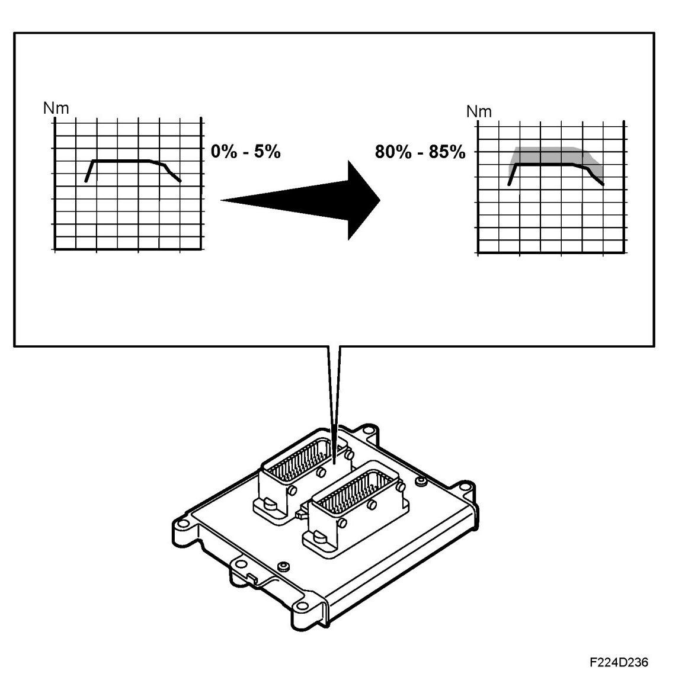

Engine Torque, Biopower
Engine Torque, BioPower

The engine's maximum torque and output varies depending on current adapted ethanol content. This is mainly a consequence of a further table for engine torque for E85 operation, added into the memory of the ECM. The table permits a higher engine torque. With an adapted ethanol content of 0-5% the table for petrol operation is used, while with 80-85% the new table for E85 is used.
With an ethanol content between 5-80% the torque varies steplessly between the two tables. At coolant temperatures below +50 degrees C the engine torque is limited if the ethanol content is between 50-85%. Due to the fact that only a small part of the fuel is evaporated when it is cold, the engine will misfire more or less powerfully if the engine torque is allowed to reach the normal maximum value. This is avoided by limiting the engine torque.
The high engine torque in the Saab BioPower engines facilitates environmentally friendlier driving. Using the engine's high torque at low engine speeds instead of needing to rev the engine harder is favourable for fuel consumption and accordingly emissions.